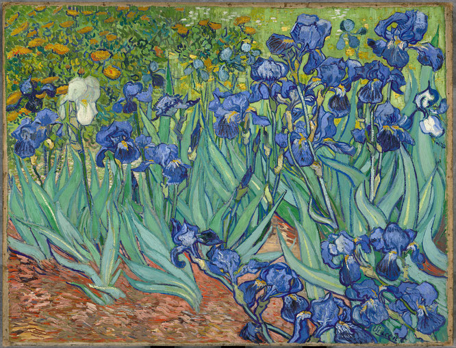

作品名 「アイリス」
花言葉 「よい便り」「メッセージ」「希望」
アイリス
「よい便り」
属名の学名「Iris（アイリス）」は、ギリシャ語で「虹」を意味し、虹のようにさまざまな色の美しい花を咲かせることに由来するといわれます。ギリシア神話で神々の王ゼウスの求愛に困った侍女のイリスは、ゼウスの妻ヘラに頼んで虹を渡る女神へ姿を変えてもらい、神々の使者となりました.花言葉の「よい便り」「メッセージ」は、虹を渡って届けられる便りにちなむもので、アヤメ（アイリス）属に共通する花言葉です。
アイリス
フィンセント・ファン・ゴッホ
フランスのサン・ミレ修道院のサン・ポール・ドゥ・モウソーレ病院に入院しているときに描いた作品の１つ。病院の庭に咲いていたマリーゴールドを背景にしてアイリスの花を描いたものである。また《アイリス》は日本の浮世絵の影響を色濃く受けている。浮世絵からの影響と思われるものに、輪郭線がはっきりしていること、西洋絵画らしくないアングルやクローズアップ、平面的な色の塗り方などである。
| 作品名 | アイリス |
| 作者 | フィンセント・ファン・ゴッホ |
| 制作年 | 1890年 |
| 種類 | キャンバス・油彩 |
| 寸法 | 92.7 cm × 73.9 cm |
| 所蔵 | J・ポール・ゲティ美術館 |